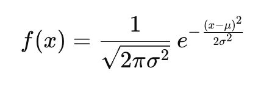
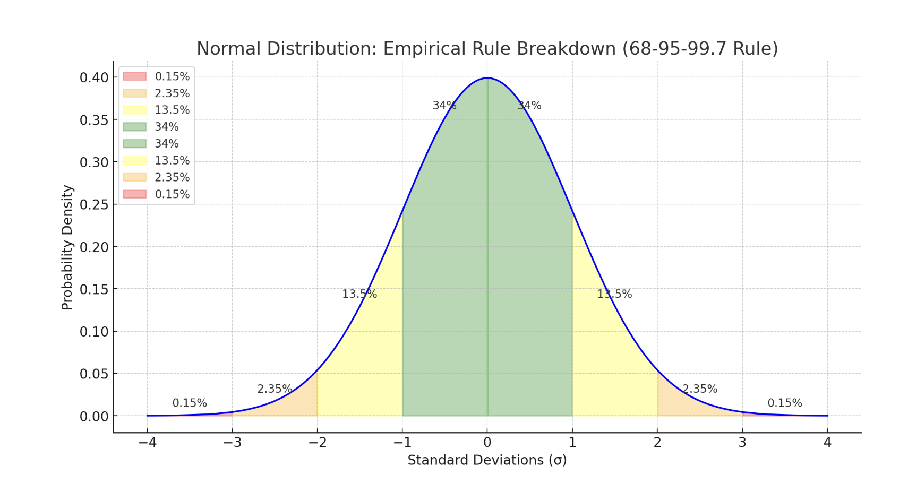
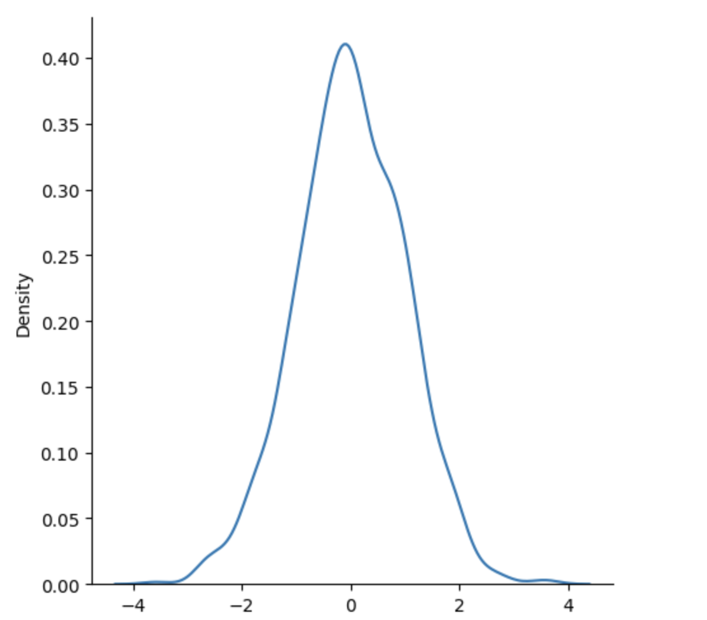

Normal (Gaussian) Distribution#
Normal Distribution#
The Normal Distribution is one of the most important distributions.
It is also called the Gaussian Distribution after the German mathematician Carl Friedrich Gauss.
The Normal Distribution is a bell-shaped curve that shows how values are distributed:
Use the random.normal() method to get a Normal Data Distribution.
- Most values are around the mean
- Fewer values are at the extremes
It's the most commonly used distribution in statistics and machine learning.
📊 Real-World Examples#
- Heights of people
- Test scores
- Blood pressure readings
- Measurement errors
These all often follow a normal distribution.
🔢 Mathematical Definition#
The probability density function (PDF) of a normal distribution:

Where: - μ = mean (center of the distribution) - σ = standard deviation (spread or width of the bell) - e = Euler’s number (≈ 2.718)
📌 Key Properties#
Property Meaning
Symmetric Centered at the mean
Bell-shaped Smooth curve, peak at mean
Mean = Median = Mode All are the same in a perfect normal dist
Defined by two params Mean (μ), Std. Dev. (σ)
Area under curve = 1 Total probability is 100%
📏 Empirical Rule (68-95-99.7)#
The Empirical Rule tells us how data is spread around the mean (center) when the data is normally distributed.
Here’s what it means:
✅ 68% of data lies within ±1 standard deviation (σ)#
- Range: from -1 to +1
- Example: If test scores are normally distributed with mean = 70 and std dev = 10.
- then 68% of students scored between 60 and 80
✅ 95% of data lies within ±2 standard deviations (σ)#
- Range: from -2 to +2
- So almost all data is within this range
✅ 99.7% of data lies within ±3 standard deviations (σ)#
- Range: from -3 to +3
- Nearly all the data lives here
📈 Visualization Idea#
-3σ -2σ -1σ 0 +1σ +2σ +3σ
|--------|--------|-------|--------|-------|--------|
| 0.15%| 2.35% | 13.5% | 34% |13.5% | 2.35% | 0.15% |
Add it all up:
- 34% + 34% = 68% within ±1σ
- 13.5% + 34% + 34% + 13.5% = 95% within ±2σ
- Almost everything = 99.7% within ±3σ
The Bell Curve is Symmetrical So, if 68% of the data lies within ±1σ, that means:
- 34% is on the left side of the mean (between -1σ and 0)
- 34% is on the right side (between 0 and +1σ)
📊 Full Breakdown of Standard Normal Distribution#
Range % of Total Data Notes
μ ± 1σ 68% From -1σ to +1σ (34% left, 34% right)
μ ± 2σ 95% From -2σ to +2σ → includes 68% + more
μ ± 3σ 99.7% Almost all data (everything within -3 to +3σ)
🧮 But what about what's outside those ranges?#
Here’s the exact breakdown of the tails:
< -3σ -2σ to -3σ -1σ to -2σ -1σ to 0 0 to +1σ +1σ to +2σ +2σ to +3σ > +3σ
0.15% 2.35% 13.5% 34% 34% 13.5% 2.35% 0.15%
- 2.35% of the data lies between -2σ and -3σ, and another 2.35% between +2σ and +3σ
- 0.15% lies beyond -3σ and another 0.15% beyond +3σ
🧠 Quick Visual#
|<--0.15--|<--2.35--|<--13.5--|<--34--|--34-->|--13.5-->|--2.35-->|--0.15-->|
-3σ -2σ -1σ 0 +1σ +2σ +3σ
- The total area under the curve is 100%
- 99.7% is within ±3σ
- The remaining 0.3% (0.15% on each end) is extreme outlier data
Note: These values are extremely rare — and in machine learning or statistics, they may be considered anomalies or noise.

Here’s the visual breakdown of the normal distribution with each region clearly marked:
- The center green areas (±1σ) represent 68%
- The yellow areas between ±1σ to ±2σ add up to 27% (13.5% each side)
- The orange areas between ±2σ to ±3σ contribute 4.7% (2.35% each side)
- The red tails beyond ±3σ are the extreme 0.3% (0.15% on each end)
It has three parameters:
🎓 Example: Students' Test Scores#
Imagine a standardized math test is given to 10,000 students.
The scores are: - Normally distributed - Mean (μ) = 70 - Standard Deviation (σ) = 10
🧠 What this means:#
- Most students score around 70
- Some score higher, some lower, in a symmetric bell shape
📊 Let’s apply the Empirical Rule:#
Score Range Std Dev Range % of Students Count out of 10,000
60 to 80 μ ± 1σ 68% 6,800 students
50 to 90 μ ± 2σ 95% 9,500 students
40 to 100 μ ± 3σ 99.7% 9,970 students
< 40 or > 100 Outside ±3σ 0.3% ~30 students
Score Range Between Which σ % of Students Real Count (out of 10,000)
< 40 Less than -3σ 0.15% 15 students
40–50 -3σ to -2σ 2.35% 235 students
50–60 -2σ to -1σ 13.5% 1,350 students
60–70 -1σ to 0σ 34% 3,400 students
70–80 0σ to +1σ 34% 3,400 students
80–90 +1σ to +2σ 13.5% 1,350 students
90–100 +2σ to +3σ 2.35% 235 students
> 100 More than +3σ 0.15% 15 students
-
loc - (Mean) where the peak of the bell exists.
-
scale - (Standard Deviation) how flat the graph distribution should be.
-
size - The shape of the returned array.
Example Generate a random normal distribution of size 2x3:
from numpy import random
x = random.normal(size=(2, 3))
print(x)
Output:
[[ 1.08425956 0.21924346 -0.87622924]
[-1.84470937 -0.02399501 -1.62717006]]
Example Generate a random normal distribution of size 2x3 with mean at 1 and standard deviation of 2:
from numpy import random
x = random.normal(loc=1, scale=2, size=(2, 3))
print(x)
Output:
[[-1.1917958 1.32752796 1.04626068]
[-1.74596895 1.31380769 1.01775866]]
Visualization of Normal Distribution#
Example
from numpy import random
import matplotlib.pyplot as plt
import seaborn as sns
sns.displot(random.normal(size=1000), kind="kde")
plt.show()
Output:

Note: The curve of a Normal Distribution is also known as the Bell Curve because of the bell-shaped curve.